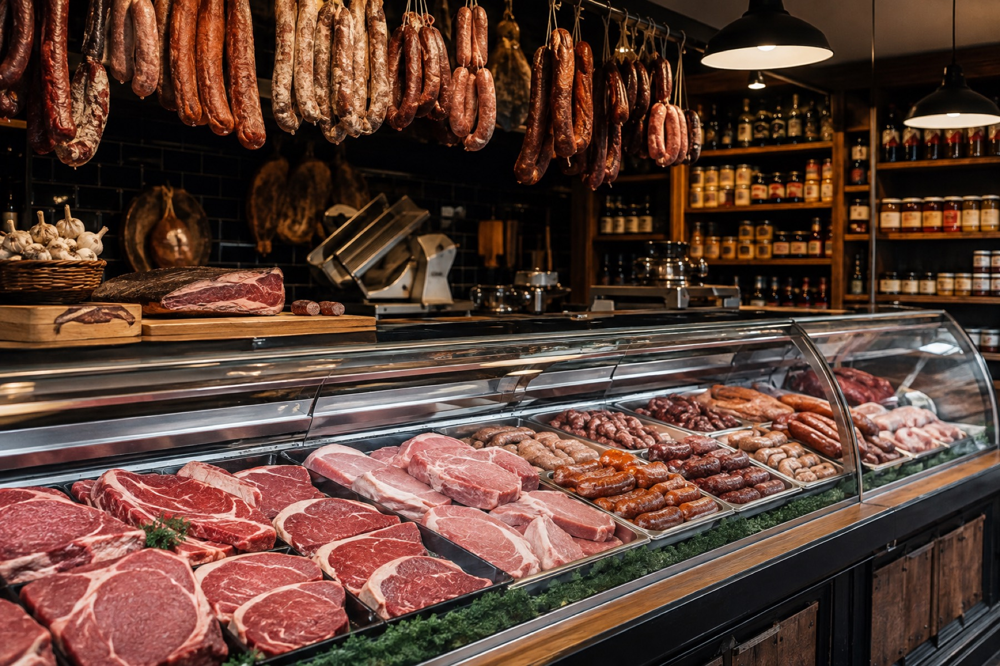

Carlsbad's German butcher & deli since 1967
Hand-cut steaks, house-made sausages and hearty German plates from the Haedrich family, back in the same white-stucco building on Paseo Del Norte. Takeout and patio tables, seven days a week.
Hand-cut steaks, ground beef ground several times a day and European-style sausages made by hand. One of the last butcher shops in Southern California to buy meat hanging, not boxed.
Prime rib, schnitzel, stroganoff, sauerbraten, stuffed cabbage rolls and the Big John's Breakfast, packed fresh. Grab a patio table or take it home.
Imported cheeses, mustards and sauces, spices, breads, pastries and strudel. The feel of a European market, here in Carlsbad.
Our story
Tip Top Meats began with Joachim "Big John" Haedrich, a German master butcher who left East Germany in 1949, earned his Master Craftsman's Certificate in 1953 and came to California in 1958 to work as a sausage master. He opened Tip Top Meats in 1967 and later made Carlsbad its permanent home.
Big John passed away in January 2023 at 94. When the lease ran out in September 2024 the family paused the business, promising to keep the name, the brand and every recipe. On February 25, 2026, Tip Top Meats reopened in the same white-stucco building on Paseo Del Norte, owned today by Big John's wife Diane, his daughter Jen Haines and grandchildren Amanda, Megan and Matthew.
The shop now runs as a butcher counter, European deli and takeout kitchen with patio tables while the family works to expand back into the rest of the building. As Jen puts it: "The best part is being in the building that Big John built. It has his DNA in it."
Catering
From deli trays and sandwich platters to hot German entrées and custom meat orders for your own grill, the counter team will help you plan it. Call (760) 438-2620 with your date and head count.
Reviews
“Tip Top Meats in Carlsbad is a legendary European deli and butcher shop. It's hands-down my favorite all-time spot for high-quality steaks, house-made sausages, and hearty German comfort food. The incredible quality, massive portions, and hardworking people make it an absolute local staple.”
“If you haven't visited Tip Top Meats since they remodeled and returned to Carlsbad, what are you waiting for? There is nowhere in North County with fresher, better prepared meats, whether you are looking for beef, pork, chicken or more”
“The cabbage roll was like a huge meatball! The Ruben was 3 halves! We tried all 3 types of potato salad... The pistachio cheesecake was light and fluffy and delicious! ... Everything was yummy. Service was excellent and the space though smaller was neat and organized.”
Hours & location
| Monday | 7:00 am – 8:00 pm |
|---|---|
| Tuesday | 7:00 am – 8:00 pm |
| Wednesday | 7:00 am – 8:00 pm |
| Thursday | 7:00 am – 8:00 pm |
| Friday | 7:00 am – 8:00 pm |
| Saturday | 7:00 am – 8:00 pm |
| Sunday | 7:30 am – 8:00 pm |
Takeout with umbrella tables on the patio and a free parking lot. Holiday hours may differ; call ahead.
Tip Top Meats
6118 Paseo Del Norte, Carlsbad, CA 92011
Stop in for breakfast, pick up steaks and sausages for the grill, or call ahead for today's German plates.
Call (760) 438-2620